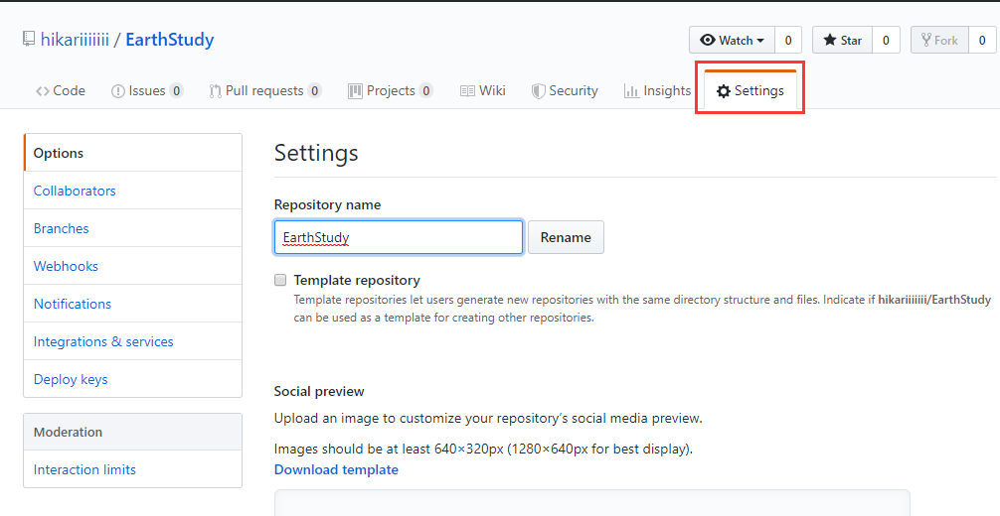
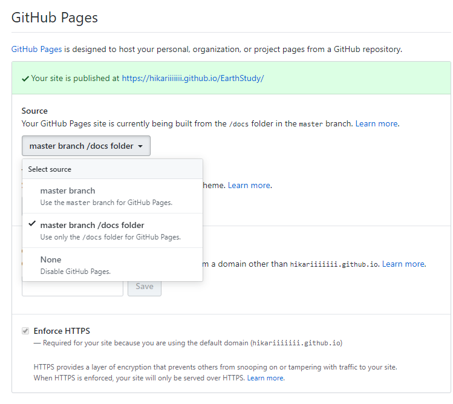

GitBook
GitBook 是一个使用 Git 和 Markdown 来构建书籍的工具。它可以将你的书输出很多格式：PDF，ePub，mobi，或者输出为静态网页。
- Git 方式： 作为一枚程序员，Git 当然是日常生活中的必备工具。使用 Git 的方式去管理文档，除了其自身的优越性外，还大大降低了额外的学习成本，非常便捷。
- Markdown：Markdown 的优秀之处可以浓缩为一句：“简单通用，让你只需专注于内容创作”。
- 多种格式输出：可以一键生成静态文件，非常便于静态站点的搭建。
- 其他：有丰富的插件、支持多语言、组织结构极为清晰等等。
安装
环境：NodeJS(v4.0.0 及以上)
通过 npm 快速安装。gitbook-cli 一个用于在同一系统上安装和使用多个版本的 GitBook 的管理程序。它将自动安装所需版本的 GitBook 来构建一本书。
$ npm install gitbook-cli -g
安装指定版本：
$ gitbook fetch 3.2.3
查看当前安装版本：
$ gitbook -V
查看已安装版本：
$ gitbook -ls
管理
gitbook-cli 和 gitbook 是两个软件 , 通过 gitbook-cli 来管理 gitbook。
列出 gitbook 帮助信息：
$ gitbook help
列出 gitbook-cli 帮助信息：
$ gitbook --help
初始化文档结构 (根据 SUMMARY.md 文件生成目录结构)：
$ gitbook init
生成 HTML 文件：
$ gitbook build
本地预览 (会默认在本地运行 HTTP Server 监听 4000 端口，并生成 HTML 文件至 _book/ ）：
$ gitbook serve
使用
目录结构：
.
├── book.json ##存放站点配置信息，例如:标题、作者、描述、插件、语言、版本、导航等├── README.md ##书籍的简单介绍├── SUMMARY.md ##定义目录结构的文件，文档左侧的目录就是根据这个文件来生成的，是用Markdown语法来定义目录树的父子关系的。├── Glossary.md ##词汇表文件，用于常用存储词汇信息。├── chapter-1/
| └── something.md
└── chapter-2/ └── something.md
案例：Summary.md 文件
# Summary
## 介绍
* [Introduction](README.md)## 文档使用手册
* [简单使用三步走](simple_three_step.md)
* [Markdown常用语法](markdown_use.md)
* [Gitbook详解](gitbook.md)
* [安装](gitbook/install.md)
* [命令](gitbook/command.md)
* [目录结构](gitbook/structure.md)
* [常用插件](gitbook/plugin.md)
* [book.json样例](gitbook/book_json.md)
* [文档设计](design.md)
* [架构逻辑](design/framework.md)
* [监控及维护](design/monitor_operation.md)
生成的文件目录结构：
├── book.json
├── design
│ ├── framework.md
│ └── monitor_operation.md
├── design.md
├── gitbook
│ ├── book_json.md
│ ├── command.md
│ ├── install.md
│ ├── plugin.md
│ └── structure.md
├── gitbook.md
├── GLOSSARY.md
├── markdown_use.md
├── README.md
├── simple_three_step.md
└── SUMMARY.md
book.json 样例简介：
{
"title": "Common", ##标题
"description": "公共文档", ##简述
"author": "Common", ##作者
"language": "zh-hans", ##语言
"gitbook": "3.2.3", ##版本
"root": ".",
"structure": {
"readme": "README.md"
},
"links": { ##左侧导航栏信息"sidebar": {
"Home": "xxx"
}
},
"plugins": [ ##-：表示关闭此插件"-lunr",
"-search",
"highlight", ##语法高亮"-livereload",
"-sharing",
"search-plus", ##支持中文搜索
"simple-page-toc", ##自动生成本页目录结构
"advanced-emoji", ##支持emoji表情
"anchors", ##Github 风格的锚点样式
"include-codeblock", ##插入代码块
"ace", ##支持ace
"emphasize", ##文字加底色
"katex", ##数学公式插件
"splitter", ##侧边栏宽度可自由调节
"tbfed-pagefooter", ##添加脚页
"expandable-chapters-small", ##目录可折叠
"sectionx", ##页面分块显示
"local-video", ##视频插件(Video.js播放)
"anchor-navigation-ex", ##悬浮导航
"todo", ##ToDo显示功能
"git-author", ##显示创建、修改记录
"alerts", ##不同alerts样式(info, warning, danger,success)
"include-csv" ##支持展示csv文件
],
"pluginsConfig": {
"theme-default": {
"showLevel": true},
"prism": {
"css": [
"prism-themes/themes/prism-base16-ateliersulphurpool.light.css"
]
},
"include-codeblock": {
"template": "ace",
"unindent": true,
"edit": true},
"tbfed-pagefooter": {
"copyright": "Copyright © xiaomi.com 2017",
"modify_label": "文档修订时间：",
"modify_format": "YYYY-MM-DD HH:mm:ss"
},
"simple-page-toc": {
"maxDepth": 3,
"skipFirstH1": true},
"anchor-navigation-ex": {
"showLevel": false,
"multipleH1":true,
"multipleH2":true,
"multipleH3":true,
"mode": "float",
"float": {
"showLevelIcon": true,
"level1Icon": "fa fa-hand-o-right",
"level2Icon": "fa fa-hand-o-right",
"level3Icon": "fa fa-hand-o-right"
},
"pageTop": {
"showLevelIcon": true,
"level1Icon": "fa fa-hand-o-right",
"level2Icon": "fa fa-hand-o-right",
"level3Icon": "fa fa-hand-o-right"
}
},
"sectionx": {
"tag": "b"
},
"favicon": {
"shortcut": "favicon.ico",
"bookmark": "favicon.ico"
},
"git-author":{
"position": "bottom",
"createTpl": "Created by {user}：{timeStamp}",
"modifyTpl": "Modified by {user}：{timeStamp}",
"timeStampFormat": "YYYY-MM-DD"
},
"styles": {
"website": "./styles/website.css"
},
"pluginsConfig": {
"include-codeblock": {
"template": "ace",
"unindent": "true",
"theme": "monokai"
}
}
}
}
可以在本地运行如下命令来分别生成 pdf, epub, mobi 格式文件
gitbook pdf
gitbook epub
gitbook mobi
GitHub Pages
GitHub Pages提供静态网站托管服务。
GitHub 上的每个仓库都可以拥有一个 GitHub Pages，对应的 URL 如下：
https://<username>.github.io/<repository>/
GitHub Pages 的静态资源支持下面 3 个来源：
master分支master分支的/docs目录gh-pages分支
执行下面命令，将 _book 目录推送到 GitHub 仓库的 gh-pages 分支。
$ git subtree push --prefix=_book origin gh-pages
或者在生成静态网页时，将保存的目录指定为 ./docs
$ gitbook build ./ ./docs
然后直接推送到 GitHub 仓库的。
$ git push origin master

